行程留守計畫
讓山下的人知道何時該求救
- 路線登山口、預定路線、營地與替代撤退路線
- 時間出發、折返、預計下山與「逾時通報」時間
- 人員姓名、聯絡方式、健康狀況與過敏史
- 聯絡領隊、留守人、管理單位與緊急電話
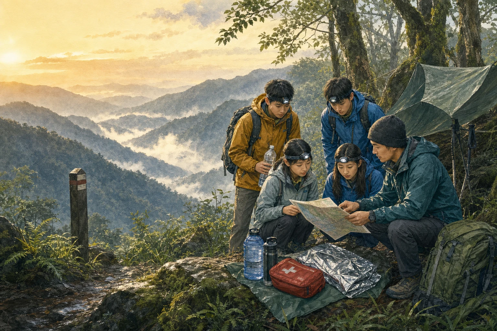
WILDERNESS SAFETY FIELD GUIDE · TAIWAN
先做計畫、帶對裝備、留在路線上。若真的迷途，停下來、保暖、定位、求援，比逞強前進更安全。
01不採、不食
不明動植物
02不任意生火
先查當地規定
03迷途不下切
定位後待援
SURVIVAL PRIORITIES
野外事故沒有固定劇本。不要死背「幾分鐘、幾小時」的口號；依現場判斷，通常先避開立即危險，再處理呼吸與大出血、保暖與遮蔽、定位求救，接著才是水與食物。
00 · BEFORE YOU GO
多數危機能在出發前被降低：查路況和天氣、選擇符合能力的路線、結伴、設定折返時間，並把完整計畫交給山下留守人。
行程留守計畫
十項必需品
* 僅作緊急與合法情境用途；攜帶火種不代表可以在山林任意生火。
如果迷途
若無法確定原路，留在相對安全、較容易被找到的位置。避免下切溪谷；溪谷常有濕冷、落差、暴漲與通訊死角。
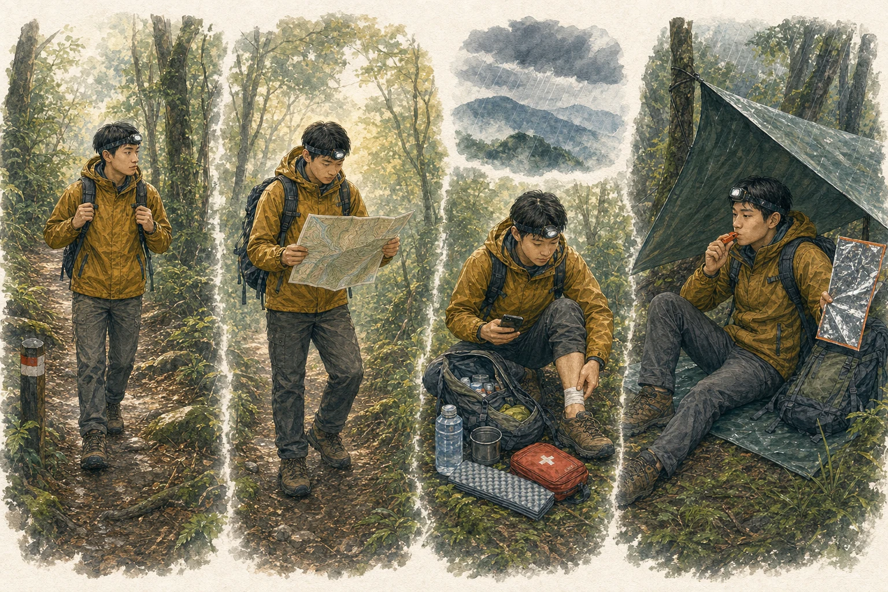
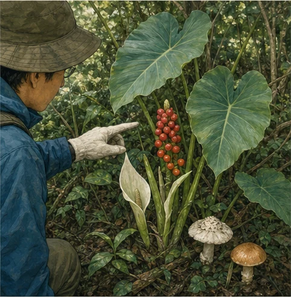
辨識的第一課：知道自己不能只靠外觀看出「能不能吃」。
01 · POISONOUS PLANTS
野生植物常有「有毒種長得像可食種」的情況；手機辨識、動物有吃、煮熟、少量試味，都不能證明安全。臺灣食藥署的原則很直接：不採、不食野生不明動植物。
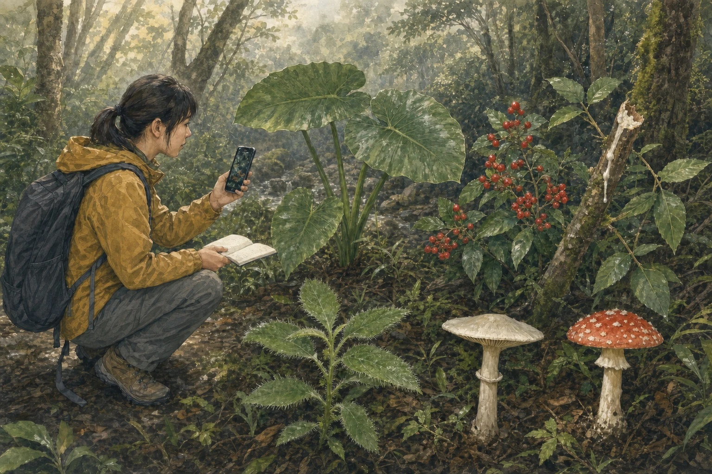
葉形相似不代表可食。姑婆芋含刺激性成分，誤食可能造成口腔灼痛、腫脹、吞嚥困難與腸胃不適。
這些可以提醒你「保持距離」，卻不是完整鑑定法；沒有明顯警告外觀的植物也可能有毒。
不要揉眼或摸臉。若為教學辨識，拍攝全株、葉片、莖、果實與生長環境，交由專業者判讀。
吐掉口中殘渣、漱口，保留植物或清晰照片並盡快就醫。不要自行催吐，也不要亂喝偏方。
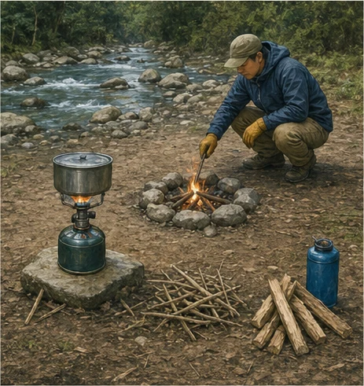
技能之前先問：這裡、此刻，法律與環境允許用火嗎？
02 · FIRE & SHELTER
火需要燃料、熱、氧氣三要素；移除任何一項就能讓火熄滅。但在臺灣國家公園與許多山林區域，裸地生火或未經核准用火受到禁止。求生教育不等於教人破壞山林。
優先使用核准地點與合格爐具；出發前查公告、火災警戒與封閉資訊。若規定禁止，就不生火。緊急保暖仍應優先使用乾衣、雨具、睡袋、地墊與緊急露宿袋。
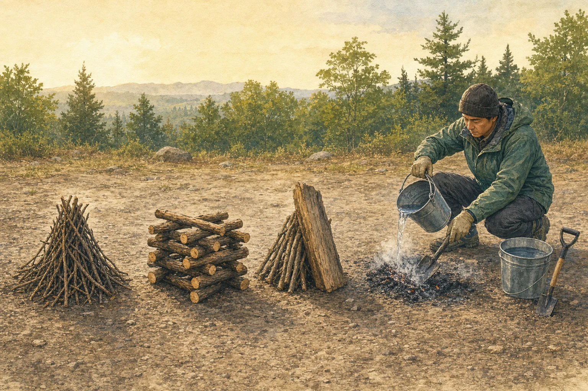
細引火材靠攏成錐，容易建立火焰；燃燒較快。
木材交錯留出空氣通道，結構較穩、熱量平均。
引火材靠在主柴一側，可替小火遮擋部分風勢。
以上是結構知識，不是任何地點都可實作。未受成人與場地管理者指導，學生不可自行點火。
若在合法指定地點用火
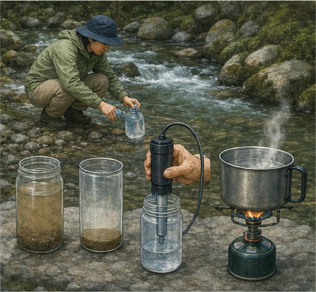
清澈不代表無菌；看不見的細菌、病毒與寄生蟲仍可能存在。
03 · SAFE WATER
美國 CDC 建議：不確定水是否安全時，煮沸是殺死病原最可靠的方法；若無法煮沸，較佳做法是先過濾，再依產品說明消毒。
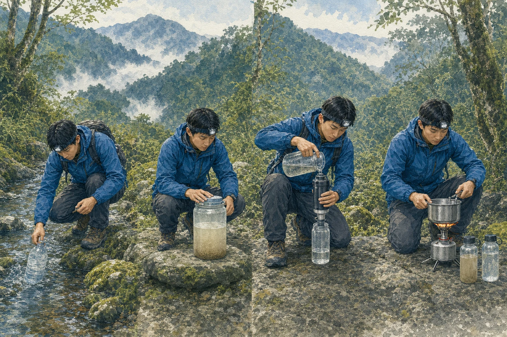
避開下游營地、排遺、農地、礦區、油膜、異味與藻華。能帶足安全飲水，就不要冒險取水。
混濁水先靜置取上層清水，或用乾淨布初濾。這一步只減少泥沙，不能直接飲用。
清水達持續翻滾沸騰至少 1 分鐘；海拔約 2,000 公尺以上可延長至 3 分鐘。若使用濾水器、二氧化氯或 UV，遵守產品適用範圍與時間。
放涼後裝入清潔、有蓋容器，避免手、瓶口或未處理水再次污染。
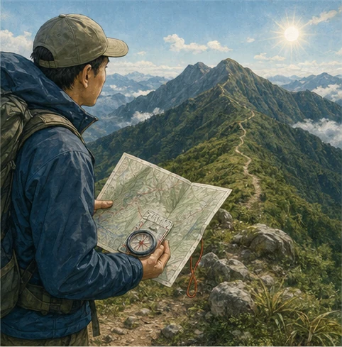
方向感來自持續確認位置，不是迷路後才第一次拿出指北針。
04 · NAVIGATION
最穩健的方式是把紙本地圖、指北針、離線地圖／GPS、沿途地標一起使用。手機可能沒訊號、沒電或受地形影響；太陽與星星只能輔助，不能替代地圖與訓練。
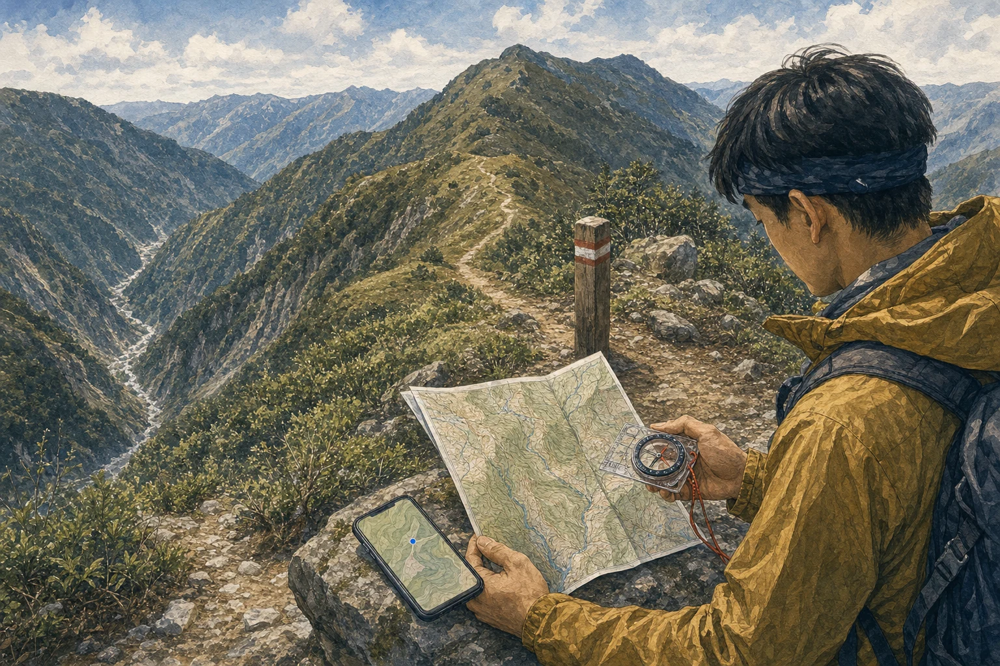
在安全處停下，回報座標、海拔、時間、傷勢、衣著與附近特徵。
憑「溪流一定通往人家」下切；臺灣溪谷常陡峭、濕滑、暴漲且難被搜救。
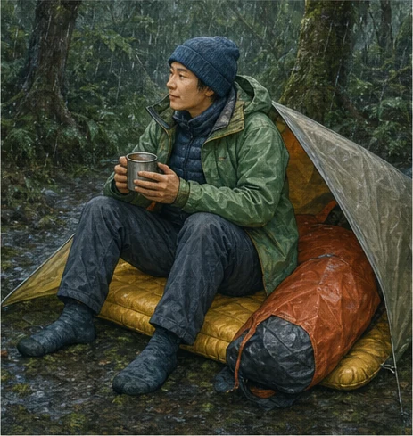
臺灣不必下雪也可能失溫：風、雨、濕衣、疲勞會一起帶走熱量。
05 · STAY WARM
失溫是身體散熱快過產熱的醫療急症。冷雨、強風、濕衣與泡水都可能在不算寒冷的氣溫下造成失溫。發抖、動作笨拙、口齒不清、冷漠或判斷變差，都要立刻處理。
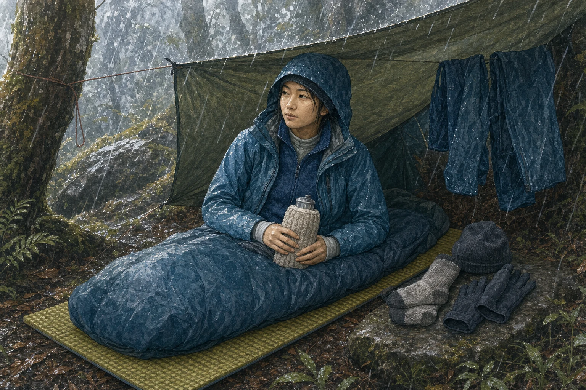
讓汗水離開皮膚；避免濕棉衣長時間貼身。
刷毛、羊毛或合適化纖留住暖空氣。
用雨衣與防風層減少蒸發和對流散熱。
地墊、背包或乾燥材料隔開濕冷地面。
疑似失溫時
06 · WILDLIFE
大多數野生動物不想和人衝突。牠們可能因護幼、護食、守巢、受傷或被逼到角落而防衛；你的目標不是戰勝牠，而是降低刺激並拉開距離。
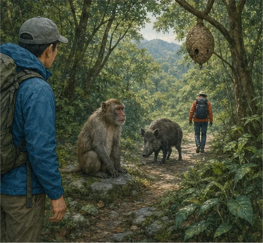
通用原則
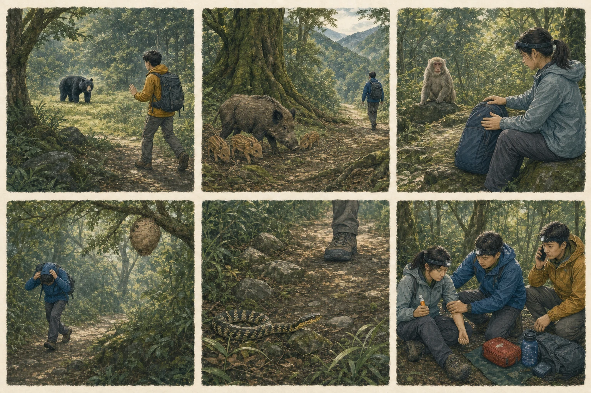
大型動物
遠處發現時保持鎮定，面朝熊、緩慢安靜後退，不靠近拍照。不要裝死、不要爬樹。若牠持續接近，尋找掩護並依林業保育署指引使用合法防熊裝備。
有衝撞風險
不要擋住牠和幼獸之間，也不要逼入死角。給牠明確退路，緩慢離開；必要時以大樹、岩塊等堅固障礙隔開。
食物衝突
不展示、不拋擲食物，不直盯、露齒或伸手搶回物品。保持冷靜，拉開距離並通報管理人員。
小而致命
發現單飛蜂或蜂巢，不揮打、不震動樹枝，壓低身體安靜離開。遭蜂群攻擊時護住頭頸，朝單一方向快速遠離，不躲進水中。
看腳下
不要徒手翻石、伸入樹洞或捕蛇。被咬後保持安靜、移除戒指手錶、記錄外觀與時間、固定患肢並立即送醫；不切開、不吸毒、不冰敷、不喝酒。
過敏急症
呼吸困難、喉舌腫脹、全身蕁麻疹、頭暈、意識改變或多處螫傷，都是立即撥 119 的理由。有醫師處方的腎上腺素自動注射器應依指示使用。
07 · EMERGENCY
臺灣山區危急求援可撥 112 或 119。112 仍需手機有電且能連上可用行動網路；不要把它誤解成「任何地方都一定能通」。
通報要說 6 件事
讓搜救看見你
在安全且開闊處使用哨子、頭燈、反光物或高對比布料。國際常見求救方式是重複三次的聲光訊號；發出後停下聆聽回應。
不要為了取得訊號攀爬危險稜線、岩壁或渡過暴漲溪流。
08 · WHAT ELSE MATTERS
國內外戶外安全機構反覆強調的重點，不是更多「求生花招」，而是降低暴露、提高可被找到的機率，並避免第二次傷害。
午後雷雨、颱風外圍、上游降雨都可能讓溪谷瞬間改變。預報不佳就改期；水色、聲音或水位改變時立刻離開河道。
山頂不是唯一目標。到點就折返，不用疲勞、天黑或天候惡化交換一次登頂。
網站不能取代 CPR、止血、骨折固定、過敏反應與野外急救的實作訓練。
預先下載離線地圖，關閉非必要功能；低訊號區持續搜尋基地台會快速耗電。
手部清潔、廁所位置與飲水源分離能避免腸胃疾病；遵守當地管理規範並帶走垃圾。
走既有路線、不採集、不餵食、不留火痕。求生技能也要在合法、可控、有人指導的場域練習。
09 · SELF LEARNING
先看所在地管理機關的即時公告，再學通用知識。下列資源於 2026-07-28 查核；外部內容與規定仍可能更新。
SOURCES & SCOPE
內容以臺灣內政部、國家公園署、林業及自然保育署、衛生福利部，以及美國 CDC、NPS、紅十字會等資料整理。完整逐條來源與查核日期見專案文件。
查看完整資料來源